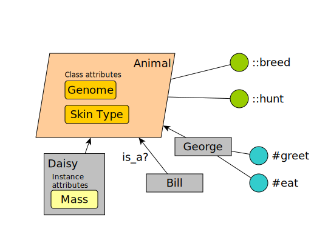
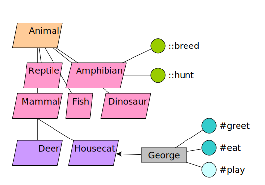
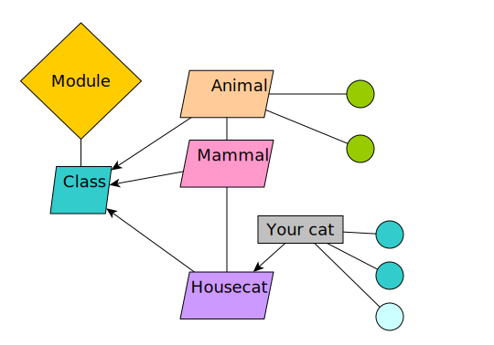

Hacking Types and Providers
PuppetConf 2015, Portland OR
Who is that cat?
Felix Frank (@felis_rex)
- Server Op from Berlin
- Puppet user since 0.24
- contributor since ~3.4
Agenda
- The Type class and DSL
- Providers
- Live demo
Focus will be on code a few key concepts, insights and code excerpts.
How do I get started with resource type and provider development?
Read code, perhaps try and
fix a bug or three
Remember
- lib/puppet/type(.rb)
- lib/puppet/provider(.rb)
Also
- lib/puppet/property(.rb)
- lib/puppet/parameter(.rb)
Don't be mislead.
all the Resource classes hardly relate
- lib/puppet/parser/resource.rb
- lib/puppet/parser/ast/resource.rb
- lib/puppet/face/resource.rb
- lib/puppet/resource.rb
- lib/puppet/application/resource.rb
First some background:
Rehashing OOP
OOP 1 - The Class Of Animals
OOP 2 - The Animal Kingdom
Then Ruby Happened
Everything is really confusing

http://theawesomedaily.com/21-things-that-look-exactly-like-donald-trump/
What's important: Both classes and instances have state and behavior.
Puppet types take advantage of that.
Types overview
Defining native types creates subclasses
Puppet::Type.newtype(:cron) do
# code!
end
...effectively gives you:
class Puppet::Type::Cron : Puppet::Type do
# generated code!
end
Forget code for a minute, though.
The practical angle
- a layer model for resources
| manifest resources |
| catalog resources |
| Resource Abstraction Layer |
| system entities |
I: Manifest Resources
file { '/etc/motd':
mode => 644
}
cron { 'break-all-the-things':
command => '/opt/scripts/cleanup.rb'
}
II: Catalog Resources
{
"type": "File",
"title": "/etc/motd",
"tags": ["file","class"],
"file": "/tmp/example-manifest.pp",
"line": 1,
"exported": false,
"parameters": {
"mode": 644
}
}
III: RAL resources
(resource abstraction layer)
- complete representation of a system entity
- properties and parameters
- does all the interesting work
IV: system entities
-rw-r--r-- 1 root root 0 Feb 5 2011 /etc/motd
---
# HEADER: ...
# Puppet Name: break-all-the-things
1 1 2 * * /usr/scripts/cleanup.rb

http://www.theawl.com/2010/02/church-boring
Now back to the code
So what about this
class Puppet::Type::Cron : Puppet::Type do
# generated code!
end
versus this


When reading the Puppet::Type code,
be mindful of class vs. instance scope
Ruby - know thyself
# class method
def self.allattrs
# instance method
def name_var
Caution!
class Puppet::Parameter
class <<self
# ...
def validate
# ...
end
end
end
Puppet::Parameter::validate is a class method
Reading type code
DSL mainly consists of calls to class methods of Puppet::Type
newproperty(:user) do
newparam(:user) do
The occasional type also comprises some plain Ruby code.
Speaking of properties and parameters
Mnemonic: Properties can
and will sync.
Parameters can never do that.
E.g. File/content
Classic property: Is the content on disk?
E.g. provider
Classic parameter: How would Puppet switch
from rpm to gem?